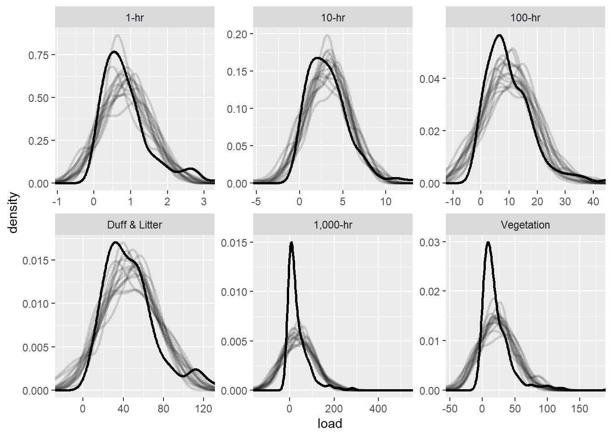
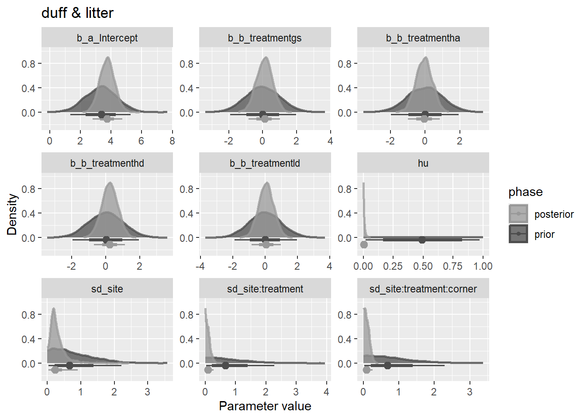
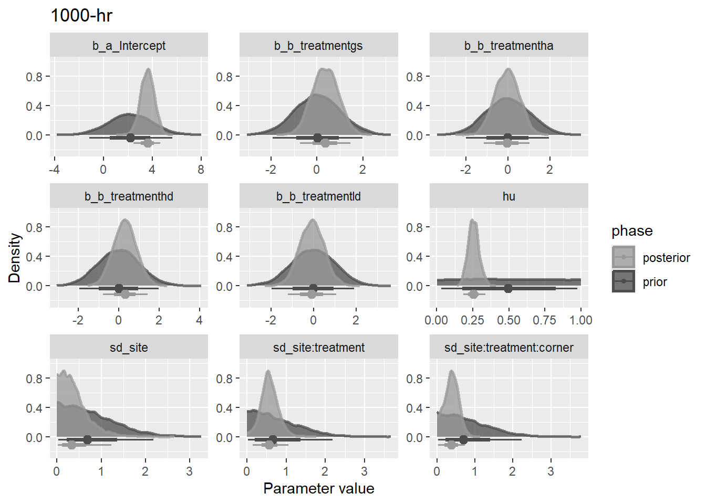
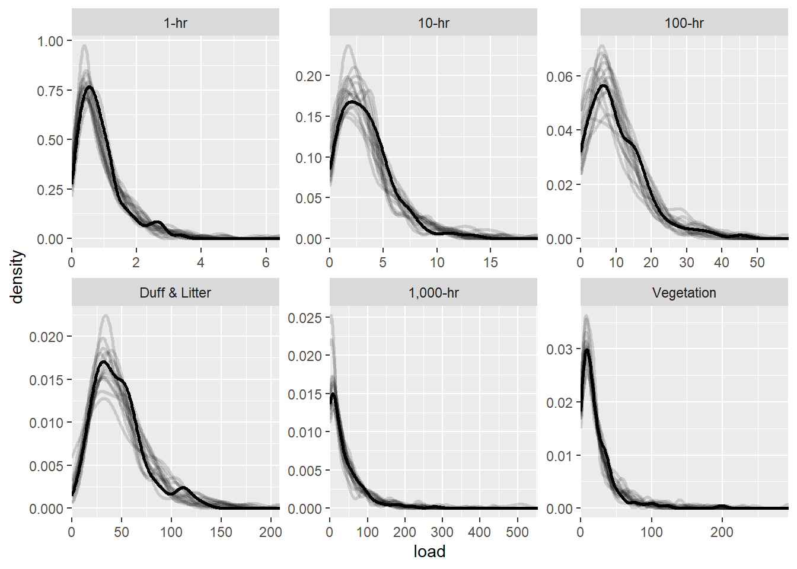

Exploration of frequentist and Bayesian approaches can lead to more robust conclusions.
4.1.1 Manova and multiple anovas
The often recommended Pillai’s Trace Test is robust to the normality assumption. Follow up with linear discriminant analysis, or multiple one-way anovas dependidng on research question. Using a Bonferroni correction for rejecting the null of alpha / m, for m hypothesis, we get an alpha of 0.008 for an alpha of 0.05 and 6 tests.
This suggests that it is unlikely that all treatemnts are equal.
One way anova (using the welch test) can either assume constant variance or not. A levene test (using median) indicates onehr, tenhr, and veg may all have different variances between groups.
The one-way anova test results are the same though between equal and unequal variance assumptions. These tests support the notion that we can’t assume that the mean vegetatvie and onehr fuel loading are equal across all treatments, but there isn’t such evidence for the other fuel loading classes.
d <-load2("long", treatment, all_of(load_vars)) |>group_by(class)d |>nest() |>rowwise() |>transmute(levene = car::leveneTest(load ~factor(treatment), data)[[3]][1],welch_uneq_var =oneway.test(load ~ treatment, data)$p.value,welch_eq_var =oneway.test( load ~ treatment, var.equal =TRUE, data = data )$p.value, ) |> knitr::kable(digits =3)
Table 4.1: Levene tests suggest that variances are unequal across treatments for all fuel loading classes. Welches tests suggest that veg and onehr fuels may have different means among treatments.
class
levene
welch_uneq_var
welch_eq_var
onehr
0.043
0.001
0.000
tenhr
0.020
0.491
0.596
hundhr
0.937
0.648
0.636
dufflitter
0.118
0.152
0.136
thoushr
0.955
0.919
0.955
veg
0.006
0.010
0.001
We can use the Games Howell test for pairwise comparisons to follow up on the welches test for differences between means when there is unequal variance among groups. These p-values provide evidence that for onehr fuels, the mean value of ha is greater than gs and ld, and the mean value for hd is also greater than gs and ld. Also, for vegetation, gs is greater than ha only. While this test is robust to the assumptions of normality, some of our data is highly skewed. Also, because of the nesting of our data, observations are not independent, so our effective sample size is not what is assumed by this test.
Figure 4.1: pair-wise tests using Games-Howell, for unequal variances across groups. This shows many statistically significant differences, but the assumption of independence, which is likely to have a significant effect on our effective sample size.
4.1.3 Multi-level model
We have transects nested within plot corners, corners nested within plots, and plots nested within sites. We would like to detect a treatment effect, while accounting for the non-independence of this nested data structure. The following model, I believe, captures this grouping structure.
form <- load ~ treatment + (1| site/treatment/corner)
This will estimate a group-wise intercept adjustments for each site, plot, and corner, based on modeled variances for each of these grouping levels.
d <-load2("long", site, treatment, corner, all_of(load_vars)) |>group_by(class)m1 <- d |>nest() |>rowwise() |>transmute(mod =list(lme4::lmer(form, data = data)),emmeans =list(emmeans::emmeans(mod, "treatment")),pairs =list(as_tibble(pairs(emmeans, infer =TRUE))) )
boundary (singular) fit: see help('isSingular')
boundary (singular) fit: see help('isSingular')
boundary (singular) fit: see help('isSingular')
boundary (singular) fit: see help('isSingular')
Pairwise comparisons with Tukey adjustment for each of 6 multilevel models representing different fuel loading classes reveals that the only evidence for differences in means among treatments is with vegetation between the gs and ha treatments. Another sizeable difference in means is between gs and ha for the onehr fuels (Figure 4.2).
Table 4.2: Pairwise comparisons among treatments with p-values < 0.05 for 6 multilevel models. Only Veg, gs-ha comparison is statistically significant.
Figure 4.2: 95% confidence intervals and pairwise comparisons of means for 6 mixed models representing different fuel loading classes using package emmeans.
Hypothesis testing with multi-level models is not as straight forward with multi-level models. The problem, explained here is two fold. For GLMMs and unbalanced experimental designs, the null distribution for the F-statistic may not be F-distributed.
For us, we have a balanced design (I think) and so the F-statistic should be F distributed and degrees of freedom should be clear from the details of the design. Because of our balanced design, the Kenward-Rogers approach and “inner-outer” design approach (which is used by nlme::lme) give the same result of 9 DF for all of the pairwise tests.
Using the package pbkrtest we can get parametric bootstrap liklihood ratio statistics and test this statistic in a number of different ways. The PBtest should probably be the most reliable, but I’ve included descriptions of the others from the package documentation for reference. I’m also including an F-test in which degrees of freedom are estimated with Kenward-Rogers approach.
LRT
Assuming that LRT has a chi-square distribution.
PBtest
The fraction of simulated LRT-values that are larger or equal to the observed LRT value.
Bartlett
A Bartlett correction is of LRT is calculated from the mean of the simulated LRT-values
Gamma
The reference distribution of LRT is assumed to be a gamma distribution with mean and variance determined as the sample mean and sample variance of the simulated LRT-values.
F
The LRT divided by the number of degrees of freedom is assumed to be F-distributed, where the denominator degrees of freedom are determined by matching the first moment of the reference distribution.
Table 4.3: Liklihood ratio tests and parametric boot strap tests of model significance: whether the model with treatment, fits the data better than the intercept only model (adjusting for nesting structure).
class
test
stat
df
ddf
F.scaling
p.value
onehr
LRT
7.48
3
NA
NA
0.0580
onehr
PBtest
7.48
NA
NA
NA
0.1459
tenhr
LRT
0.77
3
NA
NA
0.8576
tenhr
PBtest
0.77
NA
NA
NA
0.8711
hundhr
LRT
0.70
3
NA
NA
0.8725
hundhr
PBtest
0.70
NA
NA
NA
0.9091
dufflitter
LRT
6.05
3
NA
NA
0.1093
dufflitter
PBtest
6.05
NA
NA
NA
0.1129
thoushr
LRT
0.22
3
NA
NA
0.9739
thoushr
PBtest
0.22
NA
NA
NA
0.9697
veg
LRT
11.70
3
NA
NA
0.0085
veg
PBtest
11.70
NA
NA
NA
0.0300
4.1.4 Model checking
Taking a look at residual vs. fitted and qqplots of the model, it looks like our residuals are not normally distributed and there is not constant variance.
Code
# These are functions to plot for each model, residuals vs fitted and normal# quantiles. The third function is a wrapper to do both.resid_plot <-function(data) { data |>ggplot(aes(fitted, resid)) +geom_point() +facet_wrap(~class, scales ="free") +geom_hline(yintercept =0)}qq_plot <-function(data) { data |>ggplot(aes(sample = resid)) +stat_qq() +stat_qq_line() +facet_wrap(~class, scales ="free")}resid_qq_plot <-function(data) { data <-unnest(data, c(resid, fitted))list(a =resid_plot(data),b =qq_plot(data) )}d <-load2("long", all_of(c(transectid, load_vars))) |>group_by(class) |>nest() |>rowwise()
form <- load ~ treatment + (1| site/treatment/corner)mod1 <- d |>mutate(mod =list(lme4::lmer(form, data)),fitted =list(fitted(mod)),resid =list(resid(mod, type ="pearson", scaled =TRUE)),.keep ="unused" )
boundary (singular) fit: see help('isSingular')
boundary (singular) fit: see help('isSingular')
boundary (singular) fit: see help('isSingular')
boundary (singular) fit: see help('isSingular')
Figure 4.3: Residual vs fitted and normal quantile-quantile plots for a multi-level model with un-pooled treatment intercepts and partially pooled (random effects) for nested data. Fit using lme4 The residuals are not homogenous.
I’ll try to control the variance by refitting the model with nlme::lme and using the weights argument. I’ll be using the pearson residuals which are corrected for heteroscedasticity.
I had to use the control argument sigma = 1 for the model to fit. I’m not sure why, I read it in the documentation for nlme::varConstProp. I’m modeling variance as a constant proportion of the fitted values of the model. This seems to have cleaned up the variance.
Figure 4.4: Same as Figure 4.3 but variance is modeled as a function fitted values, assuming a linear relationship. Fit with nlme. The (scaled) residuals are more homogenous now.
I’ll compare AIC of the two models to see if one performs better than the other.
first, I want to see if the models produced by lme and lmer are equivalent
boundary (singular) fit: see help('isSingular')
boundary (singular) fit: see help('isSingular')
boundary (singular) fit: see help('isSingular')
boundary (singular) fit: see help('isSingular')
# A tibble: 48 × 9
class model effect term estimate std.error statistic df p.value
<fct> <chr> <chr> <chr> <dbl> <dbl> <dbl> <dbl> <dbl>
1 onehr mod1 fixed (Intercept) 0.598 0.191 3.13 NA NA
2 onehr mod2 fixed (Intercept) 0.598 0.191 3.13 64 0.00265
3 onehr mod1 fixed treatmentha 0.603 0.256 2.35 NA NA
4 onehr mod2 fixed treatmentha 0.603 0.256 2.35 9 0.0433
5 onehr mod1 fixed treatmenthd 0.439 0.256 1.71 NA NA
6 onehr mod2 fixed treatmenthd 0.439 0.256 1.71 9 0.121
7 onehr mod1 fixed treatmentld 0.0697 0.256 0.272 NA NA
8 onehr mod2 fixed treatmentld 0.0697 0.256 0.272 9 0.792
9 tenhr mod1 fixed (Intercept) 3.75 0.784 4.78 NA NA
10 tenhr mod2 fixed (Intercept) 3.75 0.784 4.78 64 0.0000106
# ℹ 38 more rows
they seem equivalent enough, although the random effects variances estimated by lmer are somewhat smaller. Now, lets compare the two lme models. I’m fitting with REML because I’m not changing the fixed effects structure.
Table 4.4: Comparison of AIC between multilevel models with and without weights to account for heterogeneity of variance. The models with weights have consistently lower AIC, indicating better fit.
class
unweighted
weighted
onehr
251.8197
220.0447
tenhr
589.9042
494.1780
hundhr
892.3760
860.7936
dufflitter
1180.4072
1177.7730
thoushr
1428.6682
1421.1023
veg
1171.0855
1122.1291
This indicates that the model with modeled variance fits the data better than the model without.
Does this change our conclusions about the effect of the treatment?
Table 4.5: Pairwise comparisons of treatments (four levels) with p-values < 0.05 for six multilevel models with variance modeled as a linear relationsihp with the fitted value.
Figure 4.5: 95% confidence intervals and pairwise comparisons of means for 6 mixed models representing different fuel loading classes using a model with variance modeled as a linear relationsihp with the fitted value.
No, it doesn’t seem to make much of a difference.
4.1.5 Other random effects structures
I’m not sure I’m using the correct random effects specification. The somewhat confusing thing is that I have a random effects nested above and below my fixed effect. This means that when I specify my random effect using the nesting notation: 1 | site/treatment/corner, I’m estimating a variance for corner:treatment:site, treatment:site, and site. The interaction of treatment and site here is analagous to a plot effect, of which there are 16.
4.2 Bayesian mode
I’ll use brms with the same formula I used for the lmm above. First we’ll reload our data.
All the data is nested to facilitate modeling each fuel class separately. We’ll look at the average loading to get an idea of the data.
d <-load2("long", all_of(c(transectid, load_vars))) |>group_by(class) |>nest() |>rowwise()
4.2.1 Gaussian model
I started out using a Gaussian model for load, with mostly default priors on the random effects. This was for convenience more than for anything. A model with positive support only, and more approriate priors would improve the model. This parameterization also results in the first treatment level (gs) being interpreted as the global intercept. This implies the unfortunate assumption that the other levels entail more variability as their priors result from the combination of the intercept prior as well as the treatment prior, wheres the prior for the first level only contains the variability in the intercept. Thus, parameterizing the model by removing the intercept for the main effect would allow equivalent interpretations of all four treatment levels. I use this approach below in the Gamma model.
4.2.1.1 Priors
We are using mostly uninformative priors for our un-pooled (fixed effect) estimates of treatment intercepts. They are all set as normal distributions, centered at the median of the fuel load with a sd of 2.5 times the sd of the data. While it is not possible to have negative values here, a current limitation of the brms package is that you can’t put bounds on individual coefficients, and we would not want to contstrain our treatment effects to be positive, as they are centered around the mean and will be both positive and negative.
# add calcualted priors to the datalibrary(ggdist)d <-mutate(d, priors =list( brms::set_prior(str_glue("normal( {round(median(data$load))}, {round(2.5 * sd(data$load))} )" ), # lb = 0, class ="b", coef ="Intercept" ) + brms::set_prior(str_glue("normal( 0, {round(1.5 * sd(data$load))} )" ), class ="b" )# brms::set_prior("student_t(3, 0, 2.5)", lb = 0, class = "sd") ))# Plot the priorsd |>mutate(prior_dist =list(tidybayes::parse_dist(priors) |>rename(dist_class = class)) ) |>unnest(prior_dist) |>ggplot(aes(ydist = .dist_obj, color =interaction(coef, dist_class))) +stat_slab(normalize ="panels", fill =NA) +stat_pointinterval(position =position_dodge(width =0.3, preserve ="single")) +geom_text(aes(label =format(.dist_obj), y =mean(.dist_obj), x =0.97, vjust =0),position =position_dodge(width =0.3), show.legend =FALSE ) +coord_flip() +facet_wrap(~ class, scales ="free_x") +scale_color_hue(name ="prior", labels =c("treatment", "intercept", "sd"))
Figure 4.6: Normal priors for the intercept are centered at the median and sd of 2.5 times the sd of the data. For the fixed effect treatment, they are centered at zero with the a standard deviation equal to 1.5 sd of the data. Fixed treatments are relative to the first treatment level (GS) which is used as the intercept.
# Plod density of model priors against posterior to get a sense of the# informativeness of the prior. Average over all fixed effects.plot_pri_post <-function(mod) {tidy_draws(mod) |>select(c(matches("b_"), matches("sd"), matches("sigma"), matches("hu"))) |>pivot_longer(everything()) |>mutate(name =if_else(str_starts(name, "prior"), name,paste0("posterior_", name) ) ) |>separate_wider_regex(name,c(phase ="prior|posterior", "_", name =".*") ) |>mutate(name =str_remove(name, "__.*")) |>ggplot(aes(x = value, color = phase, fill = phase)) +stat_slab(normalize ="panels", alpha =3/4) +stat_pointinterval(position =position_dodge(width =0.3, preserve ="single") ) +facet_wrap(~ name, scales ="free", labeller = fuel_class_labeller) +labs(x ="Parameter value", y ="Density") +scale_fill_manual(values =c("gray60", "gray30")) +scale_color_manual(values =c("gray60", "gray30"))}
Sampled prior and posterior distributions for Gaussian model variables that have priors, for one fuel class. These include the sd for the random effects as well as sigma: the model residuals, and the fixed effect of treatment. The plots for the other fuel classes look similar.
Warning: Using `size` aesthetic for lines was deprecated in ggplot2 3.4.0.
ℹ Please use `linewidth` instead.
Adding missing grouping variables: `class`

Figure 4.7: Density of the observed data (y) plotted against 10 random draws from the posterior predictive distribution.
The Gaussian distribution is symmetric and doesn’t capture well the peak near zero and the long right tail of our observed values for most of the fuel classes. It also dramatically overpredicts negative values (which are absent from our data, despite the fact that the density smoothing of the observed values seems to suggest there are some.)
The fact that the model predicts negative values suggests that it is not right for our data, and could potentially be biasing comparissons between treatments. A Gamma distribution for the response makes more sense.
4.2.2 Gamma model
The gamma model has support for only postive values, which makes sense for our weight per area data. Initial data exploration also revealed that the gamma appears to be a good fit for our data. This makes sense, as our data is fundamentally transformed count data, and the gamma distribution is the continuous generalization of the negative binomial, which is used for modeling count data.
4.2.2.1 Formula
I’m assuming the outcome is hurdle gamma distributed.
Where \(\mu = \frac{\alpha}{\beta}\), and \(\text{shape} = \beta\). This is a mixture model where the proportion of zeros are estimated and the rest of the observations are assumed to be gamma distributed. Because the gamma distribution doesn’t incldue support for zero, we don’t have to worry about any “overlapping” zero predictions from the gamma portion of the model.
Here is an interpretation for each line of the above model.
Observations of transects are assumed to be hurdle gamma distributed given the fixed and random intercept, grouping structure.
The log fuel loading for a transect is a function of the grand mean plus random effects for site, plot, and corner, and fixed effect of treatment. Each \(U\), \(V\), and \(W\), is accompanied by a \(\sigma\) parameter. This is the non-centered parameterization and is equivalent to just defining a distribution with a scale of \(\sigma\), but factoring out the scale parameter leads to better numerical stability in the Markov-chain Monte Carlos algorithm.
The prior for bar-a, the grand mean, is assumed to be normally distributed with mean and SD of \(M\) and \(S\), repsectively. These are chosen based on the mean and 2.5 times the SD of the data converted to produce a log normal distribution on the log scale. This should be a weakly informative prior.
Each of the four unique site effects come from a normal distribution centered on zero.
Same as above for 16 plot
Same as above for 64 corners.
The site effects come from a normal distribution with a SD that is assumed to be from a postive constrained, standard normal distribution. On the response scale, about 95% of the mass of the joint distribution of this line and line 4 (\(U_j\sigma_u\)) is in the interval \([0.11,8.9]\), which implies that we would be supprised to see any site with a load more than 9 times any other.
Same as 7 for plots.
Same as 7 for corners.
The fixed effect of treatment on the log scale is assumed to be from a standard normal distribution. On the response scale, we would be supprised if the effect of any treatment was more than seven times any other.
This is the default prior for the shape parameter of the gamma distribution in brms. It is chosen to be minimally informative.
Our prior assumption about the proportion of zeros is also minimally informative, it is mostly uniform between 0 and 1.
One problem with these independent prior assumptions is that the multiplicative effect of the terms on the response scale (due to exponentiation) can lead to impossibly large predictiontions, particularly when multiple random or fixed effect parameters are sampled simultaneosly in their upper tails. For instance, if the effects of site, plot, and corner where sampled at 2 (on the log scale) and the effect of treatment, at 1.8, this could lead to a predicted \(\mu\) more than 2,400 times greater than the grand mean.
A better choice would be to use a joint prior, like the Dirichlet, so a prior could be set on the total variance and the individual component variances would vary (in either a eqaul, or unequally weighted fashioin) in their repsective proportions of that total.
In this regard, with either independent, or independet priors, further work could be done on establshing the relative importance of each variance component and setting priors that reflect these differences. For our nesting structure, this means defining the length scale over which fuels are expected to vary most/least, from 10 m to 50 m to > 100 m, to thousands of meters.
4.2.2.2 Compute priors
First I’ll set my prior. This is complicated because we are now working with a log link. According to Solomon Kurz, this is how to transform your mean and sd for a normal distribution on the identity scale, to the equivalent normal distribution on the log scale (a lognormal distribution). This is what we’ll use for our prior on the grand mean (\(\bar{\alpha}\)).
d <-load2("long", all_of(c(transectid, load_vars))) |>group_by(class) |>nest() |>rowwise()lnp <-function(data) {# Desired values m <-mean(data) s <-2.5*sd(data)# use the equations mu <-log(m /sqrt(s^2/ m^2+1)) sigma <-sqrt(log(s^2/ m^2+1))# output mu and sigma on lognormals own scalelist(mu =round(mu, 2), sigma =round(sigma, 2))}
Figure 4.8: Normal priors for the grand mean (global intercept) centered at the median and sd of 2.5 times the sd of the data.
4.2.2.3 Prior predictive check
The below code ran with very many divergent transitions and the results did not really make sense. This may have to do with a comment I found here: independent priors specified on the log link usually don’t sample.
An alternative is refitting the whole model with different priors and comparing the output to infer the prior influence. I’m not going to do that right now.
I will though, sample from the priors while fitting the model in order to plot those along with the posterior for our variables of interest.
# prior_only_bf4a <- mutate(bf4a, # mod = list(update(mod, # sample_prior = "only", # cores = 4,# warmup = 4000,# iter = 5000,# control = list(adapt_delta = .99)# ))# )
4.2.2.4 Model fitting
Here I actually fit several models. They were each explored to some degree in an iterative process of model fitting and checking. For the sake of brevity, I I have focussed on just one of them (bf4a) for displaying final results. This model is the one described mathematically above.
Table 4.6: Summaries of parameters and dianostics. Rhat is a measure of model convergence, well mixed chains have an Rhat of 1, bulk and tail ESS are measures of effective sample size.
class
variable
mean
q5
q50
q95
rhat
ess_bulk
ess_tail
onehr
Intercept
-0.32
-1.17
-0.32
0.53
1.00
1261
1666
onehr
treatmentgs
-0.31
-1.15
-0.30
0.52
1.00
1278
1690
onehr
treatmentha
0.44
-0.39
0.44
1.24
1.00
1311
1640
onehr
treatmenthd
0.27
-0.56
0.27
1.08
1.00
1363
1569
onehr
treatmentld
-0.13
-0.99
-0.13
0.72
1.00
1256
1500
onehr
sd_site_Intercept
0.38
0.05
0.32
0.92
1.00
1131
1232
onehr
sd_site:treatment_Intercept
0.35
0.14
0.34
0.60
1.00
1221
1245
onehr
sd_site:treatment:corner_Intercept
0.12
0.01
0.11
0.28
1.00
1200
1374
onehr
shape
2.35
1.90
2.34
2.86
1.00
3019
2789
onehr
hu
0.01
0.00
0.01
0.02
1.00
3317
1647
tenhr
Intercept
1.06
0.26
1.07
1.86
1.00
1384
1902
tenhr
treatmentgs
0.28
-0.53
0.28
1.07
1.00
1363
1914
tenhr
treatmentha
0.07
-0.78
0.07
0.88
1.00
1477
2044
tenhr
treatmenthd
0.00
-0.82
-0.01
0.81
1.00
1418
2169
tenhr
treatmentld
0.10
-0.72
0.11
0.88
1.00
1425
1911
tenhr
sd_site_Intercept
0.25
0.02
0.18
0.71
1.00
1396
1959
tenhr
sd_site:treatment_Intercept
0.38
0.17
0.37
0.63
1.00
912
669
tenhr
sd_site:treatment:corner_Intercept
0.11
0.01
0.10
0.27
1.00
1302
1596
tenhr
shape
2.56
2.01
2.54
3.18
1.00
3337
3046
tenhr
hu
0.06
0.03
0.06
0.10
1.00
5628
2452
hundhr
Intercept
2.25
1.40
2.26
3.06
1.00
2087
2520
hundhr
treatmentgs
0.26
-0.56
0.26
1.10
1.00
2094
2651
hundhr
treatmentha
0.03
-0.78
0.03
0.88
1.00
2195
2537
hundhr
treatmenthd
0.02
-0.79
0.02
0.84
1.00
2116
2424
hundhr
treatmentld
0.15
-0.66
0.15
1.01
1.00
2129
2714
hundhr
sd_site_Intercept
0.30
0.03
0.24
0.80
1.00
1772
2044
hundhr
sd_site:treatment_Intercept
0.25
0.05
0.24
0.47
1.00
1015
1407
hundhr
sd_site:treatment:corner_Intercept
0.15
0.01
0.13
0.32
1.00
1408
2164
hundhr
shape
2.80
2.18
2.77
3.52
1.00
3476
2851
hundhr
hu
0.12
0.08
0.12
0.17
1.00
9182
2704
dufflitter
Intercept
3.74
2.94
3.74
4.53
1.00
1027
1411
dufflitter
treatmentgs
0.10
-0.66
0.11
0.87
1.00
1025
1469
dufflitter
treatmentha
-0.07
-0.84
-0.06
0.68
1.00
1032
1524
dufflitter
treatmenthd
0.23
-0.54
0.24
0.99
1.00
1058
1572
dufflitter
treatmentld
0.05
-0.73
0.05
0.82
1.00
1031
1734
dufflitter
sd_site_Intercept
0.29
0.06
0.23
0.74
1.00
1237
1178
dufflitter
sd_site:treatment_Intercept
0.10
0.01
0.08
0.24
1.00
1539
1640
dufflitter
sd_site:treatment:corner_Intercept
0.10
0.01
0.09
0.23
1.00
993
1652
dufflitter
shape
3.93
3.15
3.90
4.85
1.00
2983
2787
dufflitter
hu
0.01
0.00
0.01
0.02
1.00
3668
1545
thoushr
Intercept
3.61
2.68
3.62
4.53
1.00
1965
2456
thoushr
treatmentgs
0.34
-0.61
0.32
1.29
1.00
2208
2307
thoushr
treatmentha
-0.06
-0.99
-0.06
0.88
1.00
2087
2538
thoushr
treatmenthd
0.25
-0.69
0.26
1.20
1.00
2007
2766
thoushr
treatmentld
-0.11
-1.07
-0.11
0.84
1.00
2165
2549
thoushr
sd_site_Intercept
0.41
0.04
0.34
1.01
1.00
1592
2281
thoushr
sd_site:treatment_Intercept
0.57
0.23
0.56
0.94
1.00
1123
1167
thoushr
sd_site:treatment:corner_Intercept
0.38
0.07
0.39
0.67
1.00
824
1021
thoushr
shape
1.41
1.06
1.39
1.83
1.00
1785
2704
thoushr
hu
0.25
0.20
0.25
0.32
1.00
6466
3172
veg
Intercept
2.75
1.84
2.75
3.66
1.00
1119
2021
veg
treatmentgs
0.53
-0.32
0.52
1.39
1.01
1293
2170
veg
treatmentha
-0.39
-1.28
-0.37
0.48
1.00
1274
1827
veg
treatmenthd
0.00
-0.90
0.01
0.88
1.00
1071
2035
veg
treatmentld
0.21
-0.70
0.21
1.09
1.00
1147
1846
veg
sd_site_Intercept
0.46
0.07
0.39
1.07
1.00
1377
1222
veg
sd_site:treatment_Intercept
0.38
0.06
0.37
0.73
1.00
716
801
veg
sd_site:treatment:corner_Intercept
0.51
0.23
0.52
0.74
1.00
598
552
veg
shape
1.97
1.47
1.95
2.56
1.00
1094
1691
veg
hu
0.02
0.00
0.01
0.04
1.00
4763
2070
4.2.2.6 Prior check
While it was not possible to sample from the prior using the MCMC sampler which was likely due to the extremely long tails implied by our exponentiated, independent priors, another way of describing priors is simply sampling random from random number generators. The results of these random samples are plotted against the posterior distributions for the variables that we set priors for.
Figure 4.9: Posterior and prior distributions for variables we set priors for, for one fuel class model.
Figure 4.10: Posterior and prior distributions for variables we set priors for, for one fuel class model.
Figure 4.11: Posterior and prior distributions for variables we set priors for, for one fuel class model.

Figure 4.12: Posterior and prior distributions for variables we set priors for, for one fuel class model.

Figure 4.13: Posterior and prior distributions for variables we set priors for, for one fuel class model.
Figure 4.14: Posterior and prior distributions for variables we set priors for, for one fuel class model.
4.2.2.7 Posterior predictive check
Adding missing grouping variables: `class`

Figure 4.15: Density of the observed data (y) plotted against 10 random draws from the posterior predictive distribution.
The gamma model fits the data better. There are no predictions below zero anymore. It does seem like the gamma distribution tends to predict higher densities of lower values than we observed, as seen in the plots for the tenhr, thoushr, and veg fuel classes. But generally, the predictions appear to agree with the observed data pretty well.
4.2.2.8 Expected value of the posterior predictive
# get posterior predictions for treatments for models for all fuel classes, # ignoring random effects. These are predictions for the expected value across# all sites.predict_posterior_expected <-function(data, plot =TRUE, re_formula =NA) { newdata <- tidyr::expand(data$data[[1]], nesting(treatment)) data <-mutate(data, .keep ="none",pred =list( tidybayes::epred_draws(mod, newdata, re_formula = re_formula,value ="pred") ),lims =list(tibble(xmin =0, xmax =quantile(pred$pred, .995)) ) ) data}plot_posterior_predicted <-function(data) { p <- data |>unnest(pred) |>ggplot(aes(pred, treatment)) + tidybayes::stat_halfeye(normalize ="panels") +facet_wrap(~class, scales ="free_x", labeller = fuel_class_labeller) +coord_cartesian_panels(panel_limits =unnest(select(data, lims), lims)) +scale_y_discrete(labels = toupper) +labs(x =expression(Load~(Mg%.%ha^-1)), y ="Treatment") p}
Adding missing grouping variables: `class`
Figure 4.16: Posterior expected predictions, with no random effects. This reprsents the expected average conditions across all sites. The point estimate is the mode. Units are mg ha-1. Upper and lower limits are the 95% credible intervals.
These are the expected predictions, or predictions for the mean. It only includes the uncertainty in the mean and not the variance in predictions estimated by the model.
There is quite a bit of uncertainty about the mean all around, but there is a notable difference in that uncertainty among treatments for the onehr and veg fuel classes.
Table Table 4.7 shows these data in a tabular format. I’m using the highest density continuous interval because, while its hard to see in Figure 4.16, the highest desity region is actually slightly discontinuous.
Table 4.8: Posterior expected predictions of pairwise differences in means, with no random effects. This reprsents the expected average conditions across all sites. Units are Mg ha-1. The point estimate is the mode. Upper and lower limits are the 95% credible intervals. Prob is the probability that the predicted difference matches the sign of its median–the probability that it is not zero.
Table 4.9: This version of R2 is recommended by Gelman et al. (2019). It is defined as the variance in predictions divided by the variance in predictions plus the expected variance of the errors.
class
Estimate
Est.Error
Q2.5
Q97.5
onehr
0.36
0.08
0.21
0.51
tenhr
0.23
0.08
0.09
0.39
hundhr
0.18
0.07
0.07
0.33
dufflitter
0.19
0.07
0.08
0.34
thoushr
0.17
0.08
0.06
0.35
veg
0.44
0.10
0.23
0.63
4.3 Final
4.3.1 Model formula and prior explanation
The final model is described in Equation 4.1. The description of the meaning of the priors in the following list should probably be included for explanation.
4.3.2 fiting and diagnostics
The actual code used to fit the model in brms should be included in an appendix.
?fig-gamma-pri-post should be included as an example of the connection between our priors and posterior distributions.
We should summarize rhat and tail ess for all models as shown in Table 7.2
R-hat values were all below 1.005
Bulk and tail effective sample sizes were generally above 1000, with the exception of plot and corner SD’s for 1000-hr and Live vegetation fuels, which were above 640.
These should be adequate effective sample sizes for robust inference.
Table 4.9 gives an interpretation of R-squared for bayesian models for each of our models.
4.3.3 Results
4.3.3.1 Predicted means
The posterior effect of treatment is summarized in Figure 4.16.
For 1-hr fuels, treatments HD and HA show patterns of higher loading. This may have to do with more fine fuel inputs from higher retention. This could lead to increased fire behavior, which could be of benefit if attempting to burn under marginal conditions.
The HD treatment shows the potential for higher loading of duff and litter. This could be due to the same effect as for 1-hr fuels, but the HA treatement does not show a similar trend in this case. This could be explained by a higher probability of sampling near a trees base, where duff and litter load are known to be higher.
An obvious trend in live vegetation is revealed in the GS treatment, where tree sprouts and brush was able to regenerate without any competition. The potentially reduced live vegetation in the HA treatment is unexpected.
4.3.3.2 Predicted contrasts
Pairwise comparison of treatment efffect is sumarized in Figure 4.17
Contrasts take into account how expected predictions co-vary and is a better indicato of potential differences between treatments.
If we take the 95% credible interval as the measure of “significant differences” between treatments, then the HA treatment would be considered to result in greater fuel load than the GS treatment, and the opposite trend would be true for live vegetation: HA is greater than GS.
The posterior distributions of contrasts reveal more potential differences with somewhat reduced certainty for 1-hr, Duff & litter, and Live vegetation.
It is also likely that the LD treatment has lower 1-hr fuel loading than HA.
Similar to the HA treatment, the HD treatment also appears to have greater loading than GS.
For Duff & litter, the HD treatment may have greater load than HA
For live vegetation, LD may have greater load than HA.
For 10, 100, and 1000-hr fuels, there is no real detectable differences between treatments.
4.4 TODO:
Inter-class correlation: ICC
multivariate response to accont for correlations between fuel classes
Dirichlet, or similiar joint priors on random group SD’s to control exponential increase due to multiple independent priors
Include model for measurement error
model stations along transects
this requires some fuel classes being modeled at an added heirarchical level (station) while the others only get modeled to the transect level
Include model for deriving biomass from counts, heights, and percent cover estiamtes
variability + uncertainty about particle density
variability + uncertainty about diameter distributions
variability + uncertainty about relationship between vegetation sampling cylinder observations and biomass.